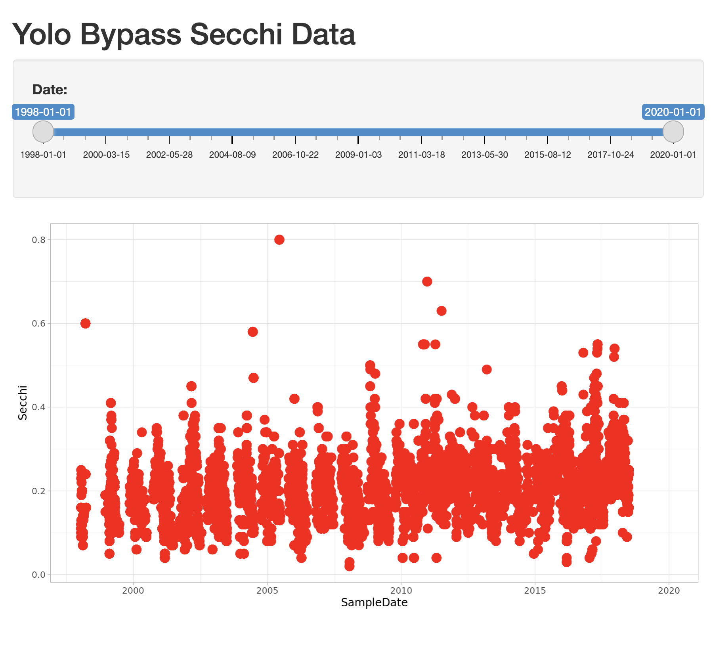
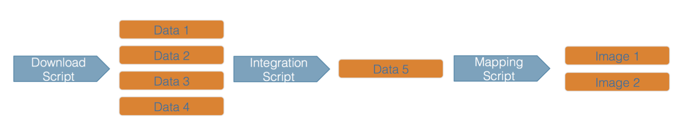
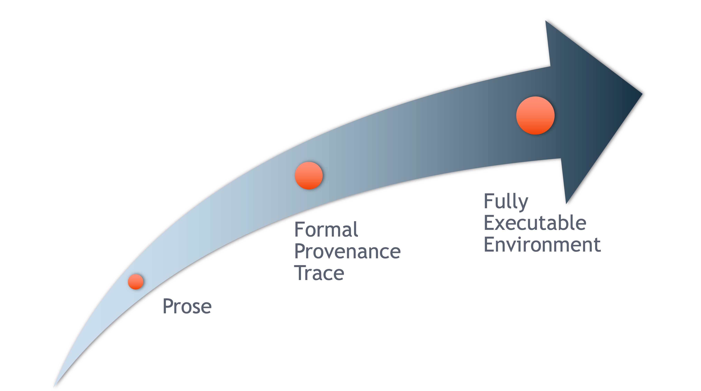
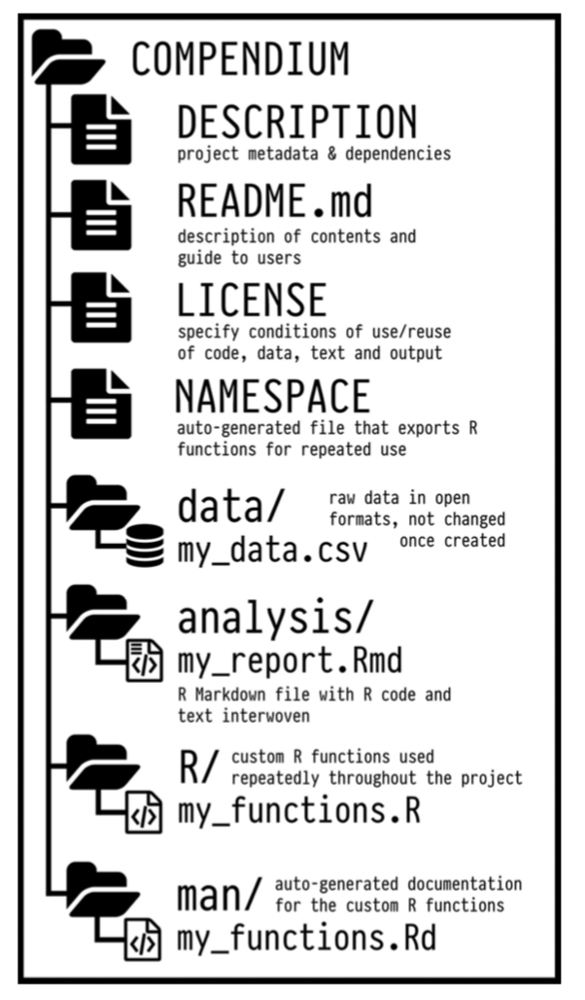
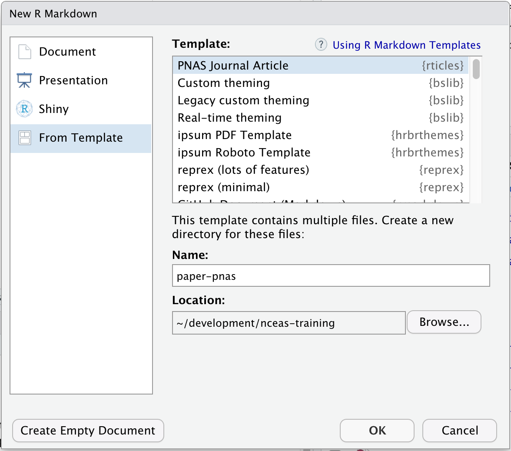

14 Reproducibility and provenance
14.1 Introduction to Shiny
14.1.1 Learning Objectives
In this lesson we will:
- review the capabilities in Shiny applications
- learn about the basic layout for Shiny interfaces
- learn about the server component for Shiny applications
- build a simple shiny application for interactive plotting
14.1.2 Overview
Shiny is an R package for creating interactive data visualizations embedded in a web application that you and your colleagues can view with just a web browser. Shiny apps are relatively easy to construct, and provide interactive features for letting others share and explore data and analyses.
There are some really great examples of what Shiny can do on the RStudio webite like this one exploring movie metadata. A more scientific example is a tool from the SASAP project exploring proposal data from the Alaska Board of Fisheries. There is also an app for Delta monitoring efforts.

Most any kind of analysis and visualization that you can do in R can be turned into a useful interactive visualization for the web that lets people explore your data more intuitively But, a Shiny application is not the best way to preserve or archive your data. Instead, for preservation use a repository that is archival in its mission like the KNB Data Repository, Zenodo, or Dryad. This will assign a citable identifier to the specific version of your data, which you can then read in an interactive visualiztion with Shiny.
For example, the data for the Alaska Board of Fisheries application is published on the KNB and is citable as:
Meagan Krupa, Molly Cunfer, and Jeanette Clark. 2017. Alaska Board of Fisheries Proposals 1959-2016. Knowledge Network for Biocomplexity. doi:10.5063/F1QN652R.
While that is the best citation and archival location of the dataset, using Shiny, one can also provide an easy-to-use exploratory web application that you use to make your point that directly loads the data from the archival site. For example, the Board of Fisheries application above lets people who are not inherently familiar with the data to generate graphs showing the relationships between the variables in the dataset.
We’re going to create a simple shiny app with two sliders so we can interactively control inputs to an R function. These sliders will allow us to interactively control a plot.
14.1.3 Create a sample shiny application
- File > New > Shiny Web App…
- Set some fields:

- Name it “myapp” or something else
- Select “Single File”
- Choose to create it in a new folder called ‘shiny-demo’
- Click Create
RStudio will create a new file called app.R that contains the Shiny application.
Run it by choosing Run App from the RStudio editor header bar. This will bring up
the default demo Shiny application, which plots a histogram and lets you control
the number of bins in the plot.

Note that you can drag the slider to change the number of bins in the histogram.
14.1.4 Shiny architecture
A Shiny application consists of two functions, the ui and the server. The ui
function is responsible for drawing the web page, while the server is responsible
for any calculations and for creating any dynamic components to be rendered.
Each time that a user makes a change to one of the interactive widgets, the ui
grabs the new value (say, the new slider min and max) and sends a request to the
server to re-render the output, passing it the new input values that the user
had set. These interactions can sometimes happen on one computer (e.g., if the
application is running in your local RStudio instance). Other times, the ui runs on
the web browser on one computer, while the server runs on a remote computer somewhere
else on the Internet (e.g., if the application is deployed to a web server).

14.1.5 Interactive scatterplots
Let’s modify this application to plot Yolo bypass secchi disk data in a time-series, and allow aspects of the plot to be interactively changed.
14.1.5.1 Load data for the example
Use this code to load the data at the top of your app.R script. Note we are using contentId again, and we have filtered
for some species of interest.
library(shiny)
library(contentid)
library(dplyr)
library(ggplot2)
library(lubridate)
sha1 <- 'hash://sha1/317d7f840e598f5f3be732ab0e04f00a8051c6d0'
delta.file <- contentid::resolve(sha1, registries=c("dataone"), store = TRUE)
# fix the sample date format, and filter for species of interest
delta_data <- read.csv(delta.file) %>%
mutate(SampleDate = mdy(SampleDate)) %>%
filter(grepl("Salmon|Striped Bass|Smelt|Sturgeon", CommonName))
names(delta_data)14.1.5.2 Add a simple timeseries using ggplot
We know there has been a lot of variation through time in the delta, so let’s plot a time-series of Secchi depth. We do so by switching out the histogram code for a simple ggplot, like so:
server <- function(input, output) {
output$distPlot <- renderPlot({
ggplot(delta_data, mapping = aes(SampleDate, Secchi)) +
geom_point(colour="red", size=4) +
theme_light()
})
}If you now reload the app, it will display the simple time-series instead of the histogram. At this point, we haven’t added any interactivity.
In a Shiny application, the server function provides the part of the application
that creates our interactive components, and returns them to the user interface (ui)
to be displayed on the page.
14.1.5.3 Add sliders to set the start and end date for the X axis
To make the plot interactive, first we need to modify our user interface to include
widgits that we’ll use to control the plot. Specifically, we will add a new slider
for setting the minDate parameter, and modify the existing slider to be used for
the maxDate parameter. To do so, modify the sidebarPanel() call to include two
sliderInput() function calls:
sidebarPanel(
sliderInput("minDate",
"Min Date:",
min = as.Date("1998-01-01"),
max = as.Date("2020-01-01"),
value = as.Date("1998-01-01")),
sliderInput("maxDate",
"Max Date:",
min = as.Date("1998-01-01"),
max = as.Date("2020-01-01"),
value = as.Date("2005-01-01"))
)If you reload the app, you’ll see two new sliders, but if you change them, they don’t make any changes to the plot. Let’s fix that.
14.1.5.4 Connect the slider values to the plot
Finally, to make the plot interactive, we can use the input and output variables
that are passed into the server function to access the current values of the sliders.
In Shiny, each UI component is given an input identifier when it is created, which is used as the name of the value in the input list. So, we can access the minimum depth as input$minDate and the max as input$maxDate. Let’s use these values now by adding limits to our X axis
in the ggplot:
ggplot(delta_data, mapping = aes(SampleDate, Secchi)) +
geom_point(colour="red", size=4) +
xlim(c(input$minDate,input$maxDate)) +
theme_light()At this point, we have a fully interactive plot, and the sliders can be used to change the min and max of the Depth axis.

Looks so shiny!
14.1.5.5 Reversed Axes?
What happens if a clever user sets the minimum for the X axis at a greater value than the maximum?
You’ll see that the direction of the X axis becomes reversed, and the plotted points display right
to left. This is really an error condition. Rather than use two independent sliders, we can modify
the first slider to output a range of values, which will prevent the min from being greater than
the max. You do so by setting the value of the slider to a vector of length 2, representing
the default min and max date for the slider, such as c(as.Date("1998-01-01"), as.Date("2020-01-01")). So, delete the second slider,
rename the first, and provide a vector for the value, like this:
sliderInput("date",
"Date:",
min = as.Date("1998-01-01"),
max = as.Date("2020-01-01"),
value = c(as.Date("1998-01-01"), as.Date("2020-01-01")))
)Now, modify the ggplot to use this new date slider value, which now will be returned
as a vector of length 2. The first element of the depth vector is the min, and the
second is the max value on the slider.
ggplot(delta_data, mapping = aes(SampleDate, Secchi)) +
geom_point(colour="red", size=4) +
xlim(c(input$date[1],input$date[2])) +
theme_light()
14.1.6 Extending the user interface with dynamic plots
If you want to display more than one plot in your application, and provide
a different set of controls for each plot, the current layout would be too simple.
Next we will extend the application to break the page up into vertical sections, and
add a new plot in which the user can choose which variables are plotted. The current
layout is set up such that the FluidPage contains the title element, and then
a sidebarLayout, which is divided horizontally into a sidebarPanel and a
mainPanel.

14.1.6.1 Vertical layout
To extend the layout, we will first nest the existing sidebarLayout in a new
verticalLayout, which simply flows components down the page vertically. Then
we will add a new sidebarLayout to contain the bottom controls and graph.

This mechanism of alternately nesting vertical and horizontal panels can be used
to segment the screen into boxes with rules about how each of the panels is resized,
and how the content flows when the browser window is resized. The sidebarLayout
works to keep the sidebar about 1/3 of the box, and the main panel about 2/3, which
is a good proportion for our controls and plots. Add the verticalLayout, and the
second sidebarLayout for the second plot as follows:
verticalLayout(
# Sidebar with a slider input for depth axis
sidebarLayout(
sidebarPanel(
sliderInput("date",
"Date:",
min = as.Date("1998-01-01"),
max = as.Date("2020-01-01"),
value = c(as.Date("1998-01-01"), as.Date("2020-01-01")))
),
# Show a plot of the generated distribution
mainPanel(
plotOutput("distPlot")
)
),
tags$hr(),
sidebarLayout(
sidebarPanel(
selectInput("x_variable", "X Variable", cols, selected = "SampleDate"),
selectInput("y_variable", "Y Variable", cols, selected = "Count"),
selectInput("color_variable", "Color", cols, selected = "CommonName")
),
# Show a plot with configurable axes
mainPanel(
plotOutput("varPlot")
)
),
tags$hr()Note that the second sidebarPanel uses three selectInput elements to provide dropdown
menus with the variable columns (cols) from our data frame. To manage that, we need to
first set up the cols variable, which we do by saving the variables names
from the delta_data data frame to a variable:
sha1 <- 'hash://sha1/317d7f840e598f5f3be732ab0e04f00a8051c6d0'
delta.file <- contentid::resolve(sha1, registries=c("dataone"), store = TRUE)
# fix the sample date format, and filter for species of interest
delta_data <- read.csv(delta.file) %>%
mutate(SampleDate = mdy(SampleDate)) %>%
filter(grepl("Salmon|Striped Bass|Smelt|Sturgeon", CommonName))
cols <- names(delta_data)14.1.6.2 Add the dynamic plot
Because we named the second plot varPlot in our UI section, we now need to modify
the server to produce this plot. Its very similar to the first plot, but this time
we want to use the selected variables from the user controls to choose which
variables are plotted. These variable names from the $input are character
strings, and so would not be recognized as symbols in the aes mapping in ggplot. As recommended by the tidyverse authors, we use the non-standard evaluation syntax of .data[["colname"]] to access the variables.
output$varPlot <- renderPlot({
ggplot(delta_data, aes(x = .data[[input$x_variable]],
y = .data[[input$y_variable]],
color = .data[[input$color_variable]])) +
geom_point(size = 4)+
theme_light()
})14.1.7 Finishing touches: data citation
Citing the data that we used for this application is the right thing to do, and easy.
You can add arbitrary HTML to the layout using utility functions in the tags list.
# Application title
titlePanel("Yolo Bypass Fish and Water Quality Data"),
p("Data for this application are from: "),
tags$ul(
tags$li("Interagency Ecological Program: Fish catch and water quality data from the Sacramento River floodplain and tidal slough, collected by the Yolo Bypass Fish Monitoring Program, 1998-2018.",
tags$a("doi:10.6073/pasta/b0b15aef7f3b52d2c5adc10004c05a6f", href="http://doi.org/10.6073/pasta/b0b15aef7f3b52d2c5adc10004c05a6f")
)
),
tags$br(),
tags$hr(),The final application shows the data citation, the depth plot, and the configurable scatterplot in three distinct panels.

14.1.8 Publishing Shiny applications
Once you’ve finished your app, you’ll want to share it with others. To do so, you need to
publish it to a server that is set up to handle Shiny apps.
Your main choices are:
- shinyapps.io (Hosted by RStudio)
- This is a service offered by RStudio, which is initially free for 5 or fewer apps and for limited run time, but has paid tiers to support more demanding apps. You can deploy your app using a single button push from within RStudio.
- Shiny server (On premises)
- This is an open source server which you can deploy for free on your own hardware. It requires more setup and configuration, but it can be used without a fee.
- RStudio connect (On premises)
- This is a paid product you install on your local hardware, and that contains the most advanced suite of services for hosting apps and RMarkdown reports. You can publish using a single button click from RStudio.
A comparison of publishing features is available from RStudio.
14.1.8.1 Publishing to shinyapps.io
The easiest path is to create an account on shinyapps.io, and then configure RStudio to use that account for publishing. Instructions for enabling your local RStudio to publish to your account are displayed when you first log into shinyapps.io:

Once your account is configured locally, you can simply use the Publish button from the
application window in RStudio, and your app will be live before you know it!

14.1.9 Summary
Shiny is a fantastic way to quickly and efficiently provide data exploration for your data and code. We highly recommend it for its interactivity, but an archival-quality repository is the best long-term home for your data and products. In this example, we used data drawn directly from the EDI repository in our Shiny app, which offers both the preservation guarantees of an archive, plus the interactive data exploration from Shiny. You can utilize the full power of R and the tidyverse for writing your interactive applications.
14.1.10 Full source code for the final application
library(shiny)
library(contentid)
library(dplyr)
library(ggplot2)
library(lubridate)
# read in the data from EDI
sha1 <- 'hash://sha1/317d7f840e598f5f3be732ab0e04f00a8051c6d0'
delta.file <- contentid::resolve(sha1, registries=c("dataone"), store = TRUE)
# fix the sample date format, and filter for species of interest
delta_data <- read.csv(delta.file) %>%
mutate(SampleDate = mdy(SampleDate)) %>%
filter(grepl("Salmon|Striped Bass|Smelt|Sturgeon", CommonName))
cols <- names(delta_data)
# Define UI for application that draws a two plots
ui <- fluidPage(
# Application title and data source
titlePanel("Sacramento River floodplain fish and water quality dataa"),
p("Data for this application are from: "),
tags$ul(
tags$li("Interagency Ecological Program: Fish catch and water quality data from the Sacramento River floodplain and tidal slough, collected by the Yolo Bypass Fish Monitoring Program, 1998-2018.",
tags$a("doi:10.6073/pasta/b0b15aef7f3b52d2c5adc10004c05a6f", href="http://doi.org/10.6073/pasta/b0b15aef7f3b52d2c5adc10004c05a6f")
)
),
tags$br(),
tags$hr(),
verticalLayout(
# Sidebar with a slider input for time axis
sidebarLayout(
sidebarPanel(
sliderInput("date",
"Date:",
min = as.Date("1998-01-01"),
max = as.Date("2020-01-01"),
value = c(as.Date("1998-01-01"), as.Date("2020-01-01")))
),
# Show a plot of the generated timeseries
mainPanel(
plotOutput("distPlot")
)
),
tags$hr(),
sidebarLayout(
sidebarPanel(
selectInput("x_variable", "X Variable", cols, selected = "SampleDate"),
selectInput("y_variable", "Y Variable", cols, selected = "Count"),
selectInput("color_variable", "Color", cols, selected = "CommonName")
),
# Show a plot with configurable axes
mainPanel(
plotOutput("varPlot")
)
),
tags$hr()
)
)
# Define server logic required to draw the two plots
server <- function(input, output) {
# turbidity plot
output$distPlot <- renderPlot({
ggplot(delta_data, mapping = aes(SampleDate, Secchi)) +
geom_point(colour="red", size=4) +
xlim(c(input$date[1],input$date[2])) +
theme_light()
})
# mix and match plot
output$varPlot <- renderPlot({
ggplot(delta_data, aes(x = .data[[input$x_variable]],
y = .data[[input$y_variable]],
color = .data[[input$color_variable]])) +
geom_point(size = 4) +
theme_light()
})
}
# Run the application
shinyApp(ui = ui, server = server)14.1.11 A shinier app with tabs and a map!
library(shiny)
library(contentid)
library(dplyr)
library(tidyr)
library(ggplot2)
library(lubridate)
library(shinythemes)
library(sf)
library(leaflet)
library(snakecase)
# read in the data from EDI
sha1 <- 'hash://sha1/317d7f840e598f5f3be732ab0e04f00a8051c6d0'
delta.file <- contentid::resolve(sha1, registries=c("dataone"), store = TRUE)
# fix the sample date format, and filter for species of interest
delta_data <- read.csv(delta.file) %>%
mutate(SampleDate = mdy(SampleDate)) %>%
filter(grepl("Salmon|Striped Bass|Smelt|Sturgeon", CommonName)) %>%
rename(DissolvedOxygen = DO,
Ph = pH,
SpecificConductivity = SpCnd)
cols <- names(delta_data)
sites <- delta_data %>%
distinct(StationCode, Latitude, Longitude) %>%
drop_na() %>%
st_as_sf(coords = c('Longitude','Latitude'), crs = 4269, remove = FALSE)
# Define UI for application
ui <- fluidPage(
navbarPage(theme = shinytheme("flatly"), collapsible = TRUE,
HTML('<a style="text-decoration:none;cursor:default;color:#FFFFFF;" class="active" href="#">Sacramento River Floodplain Data</a>'), id="nav",
windowTitle = "Sacramento River floodplain fish and water quality data",
tabPanel("Data Sources",
verticalLayout(
# Application title and data source
titlePanel("Sacramento River floodplain fish and water quality data"),
p("Data for this application are from: "),
tags$ul(
tags$li("Interagency Ecological Program: Fish catch and water quality data from the Sacramento River floodplain and tidal slough, collected by the Yolo Bypass Fish Monitoring Program, 1998-2018.",
tags$a("doi:10.6073/pasta/b0b15aef7f3b52d2c5adc10004c05a6f", href="http://doi.org/10.6073/pasta/b0b15aef7f3b52d2c5adc10004c05a6f")
)
),
tags$br(),
tags$hr(),
p("Map of sampling locations"),
mainPanel(leafletOutput("map"))
)
),
tabPanel(
"Explore",
verticalLayout(
mainPanel(
plotOutput("distPlot"),
width = 12,
absolutePanel(id = "controls",
class = "panel panel-default",
top = 175, left = 75, width = 300, fixed=TRUE,
draggable = TRUE, height = "auto",
sliderInput("date",
"Date:",
min = as.Date("1998-01-01"),
max = as.Date("2020-01-01"),
value = c(as.Date("1998-01-01"), as.Date("2020-01-01")))
)
),
tags$hr(),
sidebarLayout(
sidebarPanel(
selectInput("x_variable", "X Variable", cols, selected = "SampleDate"),
selectInput("y_variable", "Y Variable", cols, selected = "Count"),
selectInput("color_variable", "Color", cols, selected = "CommonName")
),
# Show a plot with configurable axes
mainPanel(
plotOutput("varPlot")
)
),
tags$hr()
)
)
)
)
# Define server logic required to draw the two plots
server <- function(input, output) {
output$map <- renderLeaflet({leaflet(sites) %>%
addTiles() %>%
addCircleMarkers(data = sites,
lat = ~Latitude,
lng = ~Longitude,
radius = 10, # arbitrary scaling
fillColor = "gray",
fillOpacity = 1,
weight = 0.25,
color = "black",
label = ~StationCode)
})
# turbidity plot
output$distPlot <- renderPlot({
ggplot(delta_data, mapping = aes(SampleDate, Secchi)) +
geom_point(colour="red", size=4) +
xlim(c(input$date[1],input$date[2])) +
labs(x = "Sample Date", y = "Secchi Depth (m)") +
theme_light()
})
# mix and match plot
output$varPlot <- renderPlot({
ggplot(delta_data, mapping = aes(x = .data[[input$x_variable]],
y = .data[[input$y_variable]],
color = .data[[input$color_variable]])) +
labs(x = to_any_case(input$x_variable, case = "title"),
y = to_any_case(input$y_variable, case = "title"),
color = to_any_case(input$color_variable, case = "title")) +
geom_point(size=4) +
theme_light()
})
}
# Run the application
shinyApp(ui = ui, server = server)14.1.12 Resources
14.2 Reproducible and Transparent Papers
14.2.1 Learning Objectives
In this lesson, we will:
- Discuss the concept of reproducible workflows
- Review the importance of computational reproducibility
- Review the utility of provenance metadata
- Overview how R packages are great ways to package work reproducibly
- Learn how to build a reproducible paper in RMarkdown
- Review tools and techniques for reproducibility supported by the NCEAS and DataONE
14.2.1.1 Reproducibility and Provenance
Reproducible Research: Recap
Working in a reproducible manner:
- increases research efficiency, accelerating the pace of your research and collaborations
- provides transparency by capturing and communicating scientific workflows
- enables research to stand on the shoulders of giants (build on work that came before)
- allows credit for secondary usage and supports easy attribution
- increases trust in science
To enable others to fully interpret, reproduce or build upon our research, we need to provide more comprehensive information than is typically included in a figure or publication. The methods sections of papers are typically inadequate to fully reproduce the work described in the paper.

What data were used in this study? What methods applied? What were the parameter settings? What documentation or code are available to us to evaluate the results? Can we trust these data and methods?
Are the results reproducible?
Computational reproducibility is the ability to document data, analyses, and models sufficiently for other researchers to be able to understand and ideally re-execute the computations that led to scientific results and conclusions.
Practically speaking, reproducibility includes:
- Preserving the data
- Preserving the software workflow
- Documenting what you did
- Describing how to interpret it all
Computational Provenance and Workflows
Computational provenance refers to the origin and processing history of data including:
- Input data
- Workflow/scripts
- Output data
- Figures
- Methods, dataflow, and dependencies
When we put these all together with formal documentation, we create a computational workflow that captures all of the steps from inital data cleaning and integration, through analysis, modeling, and visualization.
Here’s an example of a computational workflow from Mark Carls: Mark Carls. Analysis of hydrocarbons following the Exxon Valdez oil spill, Gulf of Alaska, 1989 - 2014. Gulf of Alaska Data Portal. urn:uuid:3249ada0-afe3-4dd6-875e-0f7928a4c171., that represents a three step workflow comprising four source data files and two output visualizations.


This screenshot of the dataset page shows how DataONE renders the workflow model information as part of our interactive user interface. You can clearly see which data files were inputs to the process, the scripts that are used to process and visualize the data, and the final output objects that are produced, in this case two graphical maps of Prince William Sound in Alaska.
From Provenance to Reproducibility

At DataONE we facilitate reproducible science through provenance by:
- Tracking data derivation history
- Tracking data inputs and outputs of analyses
- Preserving and documenting software workflows
- Tracking analysis and model executions
- Linking all of these to publications
Introducing ProvONE, an extension of W3C PROV

ProvONE provides the fundamental information required to understand and analyze scientific workflow-based computational experiments. It covers the main aspects that have been identified as relevant in the provenance literature including data structure. This addresses the most relevant aspects of how the data, both used and produced by a computational process, is organized and represented. For scientific workflows this implies the inputs and outputs of the various tasks that form part of the workflow.

Data Citation
Data citation best practices are focused on providing credit where credit is due and indexing and exposing data citations across international repository networks. In 2014, Force 11 established a Joint Declaration of Data Citation Principles that includes:
- Importance of data citation
- Credit and Attribution
- Evidence
- Unique Identification
- Access
- Persistence
- Specificity and Verifiability
- Interoperability and Flexibility
Transitive Credit
We want to move towards a model such that when a user cites a research publication we will also know:
- Which data produced it
- What software produced it
- What was derived from it
- Who to credit down the attribution stack

This is transitive credit. And it changes the way in which we think about science communication and traditional publications.
14.2.2 Reproducible Papers with rrtools
A great overview of this approach to reproducible papers comes from:
Ben Marwick, Carl Boettiger & Lincoln Mullen (2018) Packaging Data Analytical Work Reproducibly Using R (and Friends), The American Statistician, 72:1, 80-88, doi:10.1080/00031305.2017.1375986
This lesson will draw from existing materials:
The key idea in Marwick et al. (2018) is that of the “research compendium”: A single container for not just the journal article associated with your research but also the underlying analysis, data, and even the required software environment required to reproduce your work.
 Research compendia make it easy for researchers to do their work but also for others to inspect or even reproduce the work because all necessary materials are readily at hand due to being kept in one place. Rather than a constrained set of rules, the research compendium is a scaffold upon which to conduct reproducible research using open science tools such as:
Fortunately for us, Ben Marwick (and others) have written an R package called rrtools that helps us create a research compendium from scratch.
To start a reproducible paper with rrtools, run:
# install `tinytex` (See below)
# Upgrade contentid to 0.12.0
#remotes::install_github("cboettig/contentid")
# Upgrade readr from 1.3.1 to 2.0.1
#install.packages(c("readr"))
#remotes::install_github("benmarwick/rrtools")
setwd("..")
rrtools::use_compendium("mypaper")You should see output similar to the below:
> rrtools::use_compendium("mypaper")
The directory mypaper has been created.
✓ Setting active project to '/Users/bryce/mypaper'
✓ Creating 'R/'
✓ Writing 'DESCRIPTION'
Package: mypaper
Title: What the Package Does (One Line, Title Case)
Version: 0.0.0.9000
Authors@R (parsed):
* First Last <first.last@example.com> [aut, cre]
Description: What the package does (one paragraph).
License: MIT + file LICENSE
ByteCompile: true
Encoding: UTF-8
LazyData: true
Roxygen: list(markdown = TRUE)
RoxygenNote: 7.1.1
✓ Writing 'NAMESPACE'
✓ Writing 'mypaper.Rproj'
✓ Adding '.Rproj.user' to '.gitignore'
✓ Adding '^mypaper\\.Rproj$', '^\\.Rproj\\.user$' to '.Rbuildignore'
✓ Setting active project to '<no active project>'
✓ The package mypaper has been created
✓ Now opening the new compendium...
✓ Done. The working directory is currently /Users/bryce
Next, you need to: ↓ ↓ ↓
● Edit the DESCRIPTION file
● Use other 'rrtools' functions to add components to the compendiumrrtools has created the beginnings of a research compendium for us.
At this point, it looks mostly the same as an R package.
That’s because it uses the same underlying folder structure and metadata and therefore it technically is an R package. And this means our research compendium will be easy to install, just like an R package.
Before we get to writing our reproducible paper, let’s fill in some more structure. Let’s:
- Add a license (always a good idea)
- Set up a README file in the RMarkdown format
- Create an
analysisfolder to hold our reproducible paper
usethis::use_apache_license()
rrtools::use_readme_rmd()
rrtools::use_analysis()This creates a starndard, predicatable layout for our code and data and outpus that mutliple people can understand. At this point, we’re ready to start writing the paper.
To follow the structure rrtools has put in place for us, here are some pointers:
- Edit
./analysis/paper/paper.Rmdto begin writing your paper and your analysis in the same document - Add any citations to
./analysis/paper/references.bib - Add any longer R scripts that don’t fit in your paper in an
Rfolder at the top level - Add raw data to
./data/raw_data - Write out any derived data (generated in
paper.Rmd) to./data/derived_data - Write out any figures in
./analysis/figures
It would also be a good idea to initialize this folder as a git repo for maximum reproducibility:
usethis::use_git()After that, push a copy up to GitHub.
14.2.2.1 A quick tour of features for reproducibility in RMarkdown
We’re now going to walk though some of the key features that makes writing transparent articles with RMarkdown a breeze. We’ll cover:
- Loading data reproducibly
- Attractive typesetting for mathematics
- Figures, tables, and captions
- In-text citations
- Bibliographies
To do this, we will work from an already built-out example paper that illustrates these features. Start by:
- Copy the example file
paper.Rmdtoanalysis/paper/paper.Rmdin the project you built earlier - Copy the example bibliography
references.bibtoanalysis/paper/paper.Rmdin the project you built earlier - Open that
paper.Rmdfile in the reproducible paper project in RStudio - Walk through the example file to examine each of the Rmarkdown features
- Knot and view the file
download.file("https://learning.nceas.ucsb.edu/2021-09-delta/files/paper.Rmd", destfile = "analysis/paper/paper.Rmd")
download.file("https://learning.nceas.ucsb.edu/2021-09-delta/files/references.bib", destfile = "analysis/paper/references.bib")14.2.2.2 Getting PDF rendering working
By default, rrtools will create papers that are meant to be rendered either as PDF documents, or as MS Word documents. You can switch between these, but for them both to work you must have the requisite software installed on your machine. For PDF, this means you need to have a version of Tex installed with pdflatex available, which can be a difficult process on Macs and Windows. We have found that installing the R package tinytex provides a good, reliable workaround on macs and windows machines, although there can still be some futzing involved if you already have LaTEX installed, or if you don’t have sufficient permissions to install. Its beyond the scope of time available today to diagnose all of the installation issues, but hopefully tinytex will provide a path forward for you. In brief, you can install tex in your personal account using tinytex::install_tinytex(), and the restart your RStudio session, and you should have a working version of pdflatex that allows things to build the documents properly.
install.packages("tinytex")
tinytex::install_tinytex()14.2.2.3 Wrapping up with rrtools
Hopefully, now that you’ve created a research compendium with rrtools, you can imagine how a pre-defined structure like the one rrtools creates might help you organize your reproducible research and also make it easier for others to understand your work.
For a more complete example than the one we built above, take a look at benmarwick/teaching-replication-in-archaeology.
14.2.3 Reproducible Papers with rticles
Note that the rticles package provides a lot of other great templates for formatting your paper specifically to the requirements of many journals. In addition to a custom CSL file for rreference customization, rticles supports custom LATeX templates that fit the formatting requirements of each journals. After installing rticles with a command like remotes::install_github("rstudio/rticles") and restarting your RStudion session, you will be able to create articles from these custom templates using the File | New File | R Markdown... menu, which shows the following dialog:
 Select the “PNAS” template, give the file a name and choose a location for the files, and click “OK”. You can now Knit the Rmd file to see a highly-targeted article format, like this one for PNAS:
 While
While rticles doesn’t produce the detailed folder layout of rrtools, it is relatively simple to use the two packages together. Use rrtools to generate the core directory layout and approach to data handling, and then use articles to create the structure of the paper itself. The combination is incredibly flexible.
The 5th Generation of Reproducible Papers

Whole Tale simplifies computational reproducibility. It enables researchers to easily package and share ‘tales’. Tales are executable research objects captured in a standards-based tale format complete with metadata. They can contain:
- data (references)
- code (computational methods)
- narrative (traditional science story)
- compute environment (e.g. RStudio, Jupyter)

By combining data, code and the compute environment, tales allow researchers to:
- re-create the computational results from a scientific study
- achieve computational reproducibility
- “set the default to reproducible.”
They also empower users to verify and extend results with different data, methods, and environments. You can browse existing tales, run and interact with published tales and create new tales via the Whole Tale Dashboard.

By integrating with DataONE and Dataverse, Whole Tale includes over 90 major research repositories from which a user can select datasets to make those datasets the starting point of an interactive data exploration and analysis inside of one of the Whole Tale environments. Within DataONE, we are adding functionality to work with data in the Whole Tale environment directly from the dataset landing page.


Full circle reproducibility can be achieved by publishing data, code AND the environment.